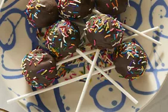

Cake Pops!

Cake pops... for Pops?
Tasty, easy-making, and perfect for kids.
Ingredients
- Cake
- Popcicle sticks
- Baking chocolate
Steps
- Make cake.
- Break up cake. Press into spheres.
- Insert Popcicle stick. Dip in chocolate.
- Let chocolate harden on baking sheet.
- Enjoy!